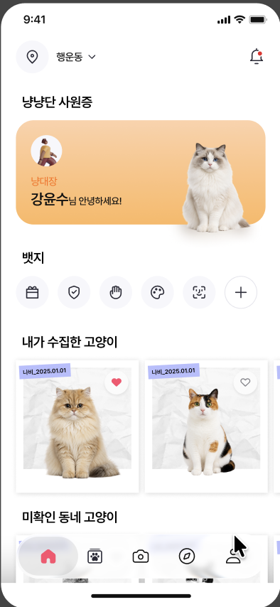
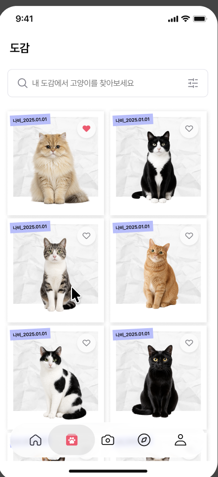
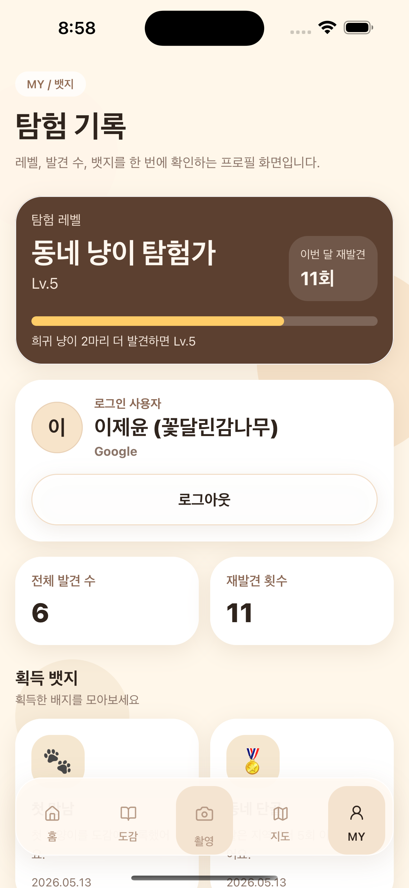

사진 한 장으로 시작하는 동네 고양이 기록.
냥도감은 고양이 사진을 모아두는 앱이 아니라, 발견한 장소와 특징, 재발견 이력을 함께 쌓는 모바일 도감입니다. 정확한 좌표 대신 지역 단위 힌트를 사용해 고양이와 사람 모두에게 안전한 기록 방식을 지향합니다.
홈
이번 주 수집 흐름을 한눈에.
최근 발견한 고양이와 이번 주 기록을 바로 확인합니다. 오늘 산책에서 어떤 고양이를 다시 찾아볼지 자연스럽게 이어집니다.
이번 주 수집 현황
최근 만난 고양이
다음 촬영 진입

도감
고양이마다 하나씩 채워지는 도감.
치즈냥, 턱시도냥, 삼색이처럼 눈으로 확인한 특징을 중심으로 고양이 카드를 쌓습니다. 아직 만나지 못한 칸은 다음 발견을 기대하게 만듭니다.
고양이별 카드
미확인 슬롯
수집 진행률

마이페이지
탐험 기록이 성장으로 남습니다.
발견 수, 재발견 횟수, 뱃지를 통해 사용자의 산책 기록이 쌓입니다. 고양이를 찾는 일이 작은 성취로 이어지도록 설계했습니다.
레벨과 진행률
획득 뱃지
내 도감 요약
